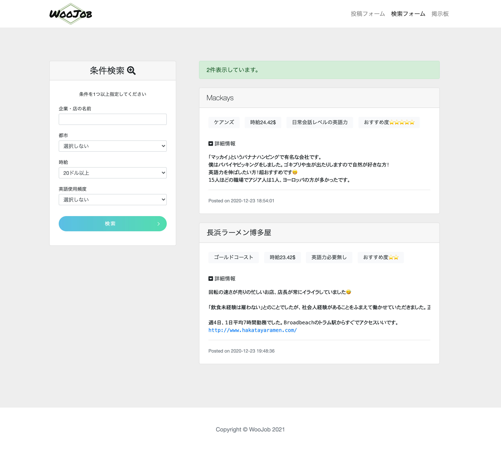

Portforio
Portforio
SE2
制作したアプリへのリンク

アプリの概要
- ・エンジニアを目指す初学者向けアプリ
- ・アプリ名はStudy English for Engineersの略
- ・プログラミング初期に使う英単語をクイズ形式で学習
- ・snsで出会った仲間4人でチームを組み開発
ソースコード
GitHub(SE2)工夫したポイント
- ・英語＝海外＝海を連想すると考え、ヘッダーを空、中心部の画像が海、フッターが大地をイメージして制作
- ・結果ページに単語の解説が書かれたURLを表示
- ・ログインしないと閲覧できないページやパスワードを暗号化して保存する等の処理を実装
- ・migrate機能使用しテーブル作成。seed機能で問題の初期データ挿入
- ・ユーザーが気軽に使いやすいようにsnsログイン実装（途中）
この制作物に持っている想い
プログラミング学習を初めてまず最初に感じたことが、「言語ごとの英単語が覚えられない・・」でした。その中でtwitterで出会ったメンバーと共同開発をすることに。同じ志を持つ学習者のためになるものを作りたい！という思いが一致し、このアプリを制作しました。今はCSSとJSのみですが、「学べる言語を増やす」「記述式を追加する」などを行いより良いものにしたいと考えています。実際にコミュニティ内の10人程に使って頂き、その感想をもとに改善中です。
WooJob
制作したアプリへのリンク(修正中)
アプリの概要
- ・オーストラリアで留学中かつ仕事探しをしている人向けのアプリ
- ・フレームワーク無しでPHPを用いて試行錯誤しながら実装
ソースコード
GitHub(WooJob)工夫したポイント
- ・10投稿ごとのページネーション実装
- ・簡単なユーザー登録、プロフィール写真設定可能
- ・返信機能
- ・送信ボタンにjQueryを使用
- ・開発の中でイシュー・プルリクを使用
この制作物に持っている想い
海外生活に興味を持つ若者に、良い環境の職場で最高の経験をして欲しい。と考えこのアプリを製作しました。私自身オーストラリアでの職探しを経験し、情報の少なさに苦労した経験があります。実際私の周りの友人が、違法な賃金や悪質や労働時間に苦しんでいるのをみて「仕事の情報を気軽に共有できるアプリを作りたい」と強く感じました。